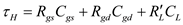
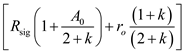
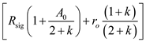

Step 1:
Refer to Figure 9.38 in the textbook for a common source amplifier with source-degeneration resistance and its equivalent circuit.
The formula for gate to source resistance  using hybrid
using hybrid  model is,
model is,

Consider the assumptions: . Therefore, the expression for  can further be simplified as,
can further be simplified as,
Step 2:
Write the expression for the trans-conductance of the CS amplifier.
The output resistance of the CS amplifier is,

Refer to Figure 9.38 (d) in the textbook to determining the gate to drain resistance.
The formula for the gate to drain resistance  seen by the capacitance
seen by the capacitance  is,
is,
Here,
Substitute the corresponding expression to get the 
Step 3:
Step 4:
The overall open circuit time constant,  is,
is,

Substitute for  ,  for
,  for  , and for
, and for  .
.
Hence, the overall time constant expression is proved.
 and
and  for
for  to derive the expression for
to derive the expression for  .
.